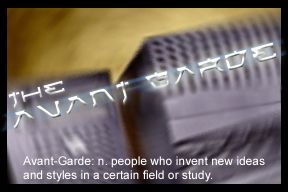

this box has been cleansed of evil by The Avant-Garde
This marks the beginning of the new era in web-site defacing...
We consider ourselves to be the avant-garde in Hacking. We mean no harm, we
are not dangerous people. We mean to expose security flaws where they are
present. We cannot lie, we really enjoy watching your insides and exposing
your secrets. Maybe you need to work on yourselves a bit more, hey, it
doesn't only save your time, it saves ours. Please, enjoy; hell, you paid
for it!
The Avant-Garde (T-A-G) does not try to preach anything or revenge for
anything, at least for the moment. This is just our way of "inventing new
ideas and styles in a certain field or study" -in this case hacking.
And our way of telling you (admins) that the easy way to do things is not always the
right or secure way ;)
If you still don't have an idea what we're talking about this will happen
again, again, and again..
Unlike the SW guys, we will never reveal ourselves to the jedi -in our case the public.
Yes it is! this is another site that has had the help of the Security
Experts @ T-A-G.. Once again we tell you that this is just our way of showing
you the way to secure your servers.
"Truth is a virus... Let it spread! "
-chameleon
This b0x was defaced by
in0d3 - l0b3 - jn3z
(The Members of T-A-G)
Greetz to:
.[ f0bic ].
.[ #HackTech ].
.[ ops @ #DaSHiT ].
.[ attrition ].
.[ 2600 ].
.[ c0redump ].
.[ #HackPhreak ].
.[ rootshell ].
Fuckz to:
.[ wojtek ].
.[ JP ].
(Link to the Original Page)